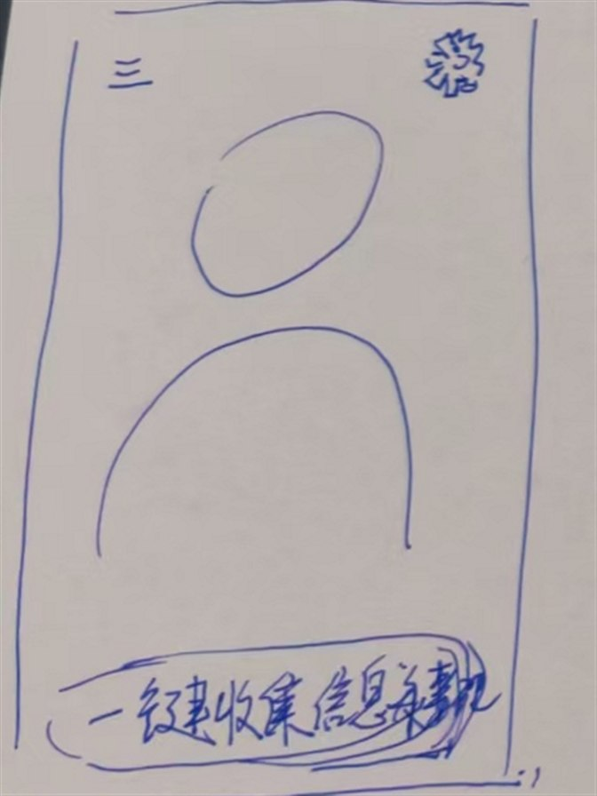
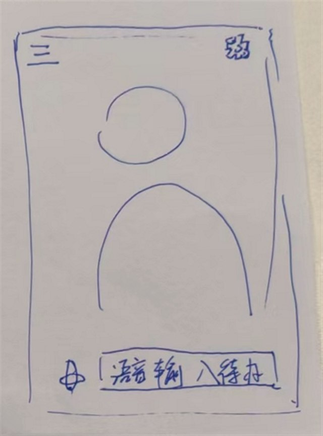
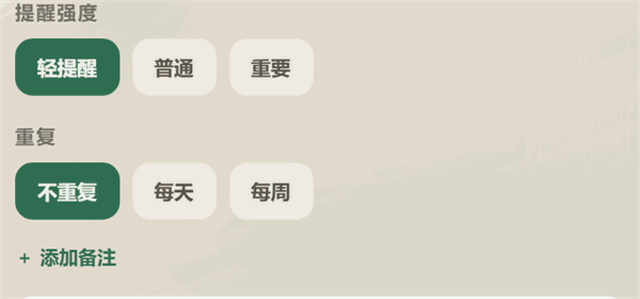
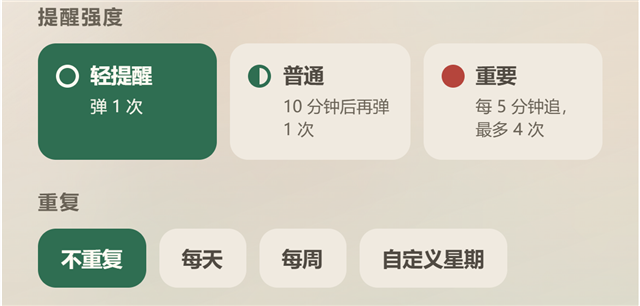
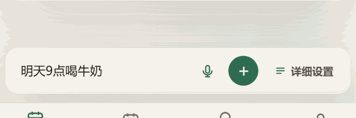
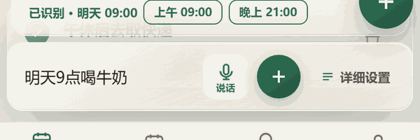

「这件事我记着呢。」
记了三周。今天还在原地。
问题
早上打开待办，七条红色的「已逾期」排在最上面。你往下滑了两下，锁屏，跟自己说晚上再说。——晚上也不会说。
「这件事我记着呢。」
记了三周。今天还在原地。
「等会儿就做。」
等到了最后一秒，熬一个通宵做完，然后发誓下次不这样。
「我明明写下来了。」
写在三个 App 和一个备忘录里，一个都没再打开。
所以我们把问题拆成两行：记不住，和启动不了。
所有工具都在解决第一行。第二行没人碰——因为它不像个功能，它像个人问题。
来历
比赛信息散在群里、公众号里、食堂门口的海报上。我们想做一个聚合器——一个页面看完全部比赛。这就是这个项目最初的全部想法。
明天提醒我去医院。
记得提醒我交电费。
我妈不发清单，她发微信。我成了她的备忘录——会响、会催、不会忘的那种。
后来我们去找同学聊天，第一句问的是「比赛信息是不是很难找」。答案是：不难，老师在群里一转就来了。可他们说起了另一件事——没人提醒我。
比赛信息太分散，学生找不到 → 那就做个信息聚合
信息从来不缺。大家缺的是同一样东西：一个会在对的时候戳你一下的人。
我妈的事，和我同学的事，其实是同一件事：都需要有个人替他们记着，再在对的时候推一下。于是我们把首页从「收集信息」改成了「提醒我一下」——产品是从那一刻才真的成立的。
它对付的不是「记不住」，是「启动不了」。名字就是把门槛写进名字里：
不用一次做完，走一小步就算数。
提示语是「就差这一小步」，连续天数不叫连胜，叫「连着走了 N 天」。
解法
不选日期、不挑优先级、不填表单。你说「明天下午三点，一个半小时，很重要」——它自己拆成时间、时长和轻重，边打边显示拆出来的结果。
有固定时间的先占位，其余按轻重填进今天的空档；中午不排，块之间留 10 分钟，一天最多排 4 小时——排不下的顺延，不给你造一个假计划。
首页永远只有一张卡：现在做这一件。按钮不叫「完成」，叫「开始 5 分钟」。做完可以停，停不叫放弃，叫先歇着。
右边是真的。不是截图，也不是录屏——你现在就可以点它、说一句话试试。
过程
倒回第一天。产品不是被「想」出来的，是被一次次退回去改出来的。
一个列表、一个输入框、三个 tab。三条硬约束从第一天定死：单文件、数据只存本地、只用一套配色。
问卷和访谈告诉我们：信息不是瓶颈。真正的瓶颈是「知道要做，但不动」。范围就此扩大。
第一天想做的其实是「校园比赛信息收集」——首页上百人抢一场比赛的入口。访谈之后，纸上那些「信息汇总」「比赛列表」被一条条划掉，最后只剩一个入口。


两组访谈。真正的收获不是「他说了什么」，而是把吐槽翻译成病因——同一个病因，往往对应好几条抱怨。
不是手机差，是我们给主题上了一层大面积毛玻璃，还叠了粒子特效。这条反馈逼出了「性能优先」开关，也让我们第一次知道：好看要付性能税。
三处都来自同一个病因：用户看不出区别，就等于没做。
不只是能聊——它能真的把话变成动作，写进你的列表里。
上面这些小方块，是 37 次「改之前先存一份」。它们不是功劳簿——只证明一件事：每一步都退得回去。
改了什么
用户说「看不出区别」，就是设计还没做完。


「轻提醒」= 弹 1 次 · 「普通」= 10 分钟后再弹 · 「重要」= 每 5 分钟追最多 4 次。把抽象的词换成人能预演的结果。


解析会错，这不可避免。关键是错的时候用户能不能一眼看见——所以它永远以一颗胶囊显示出来，错了改一颗，不影响整批。
小布
把聊天框贴在 App 上不叫 AI。小布必须真的能写你的数据——所以我们把它做成三层，最后拍板的那层不是模型。
关键词 + 正则判断你要「记 / 查 / 改 / 完成 / 删」，复用 App 自己的时间解析。离线可用，零成本，不用等网络。
DeepSeek / Kimi / 通义，浏览器直连，Key 只存在你自己机器上。它只负责把绕的说法翻成一句动作。
模型和本地共用同一个执行器：真的写数据、重渲染、给「撤销」。模型再聪明也改不坏数据。

给谁用 · 怎么活
22–28 岁，学生或刚工作。
手上同时有 5–15 件「应该做」的事：论文、作业、报销、体检、约人。
他们有明确的拖延倾向，能感觉到「事情堆着」的焦虑，但每次打开待办 App 都会被长清单劝退。
共同点：愿意说，不愿意填表单；需要被推着开始，不需要被评判。
记录、排程、提醒全部免费；AI 对话与多端同步订阅。大模型用用户自己的 Key，边际成本接近 0。
心理中心、辅导员、社团、新生礼包。一个人替一群人装，获客成本最低，也最容易验证留存。
HR 的入职清单、项目组的周任务、工作室的排期。从 20 人以内的团队开始，先证明「别人也愿意让它替自己记事」。
接下来
现在是网页 + PWA，靠系统通知。下一步是原生壳 + 服务端推送——App 被系统杀掉之后，闹钟还得响。
规则打底，小模型兜底。中文里模糊的时间表达太多，规则库覆盖八成，剩下的交给模型判断。
系统级入口：分享一张截图、转发一条群通知，直接变成待办。这是「不用打开也能用」的终点。
现在这版已经能装在手机主屏上、离线可用、锁屏能弹通知。
它缺的不是功能，是让更多人今天就开始用第一件。